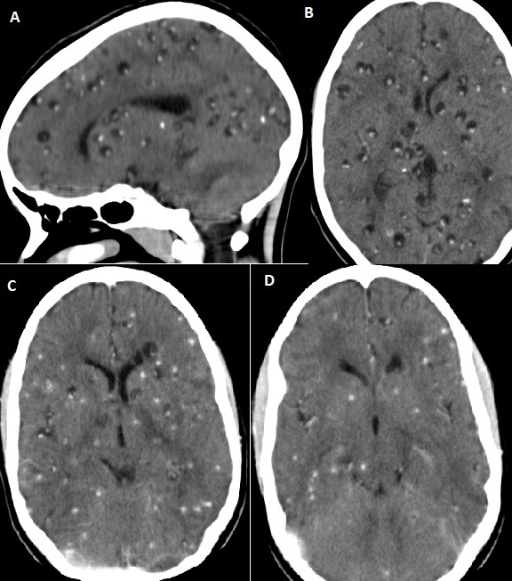

Ficha del catálogo
Neurocisticercosis
- Sistema
- Nervioso
- Modalidad
- TC
- Región
- Parénquima cerebral, espacio subaracnoideo y ventrículos
- Dificultad
- Intermedio
La neurocisticercosis es la infección del sistema nervioso central por la forma larvaria de la tenia del cerdo y constituye una causa muy frecuente de epilepsia adquirida en áreas endémicas. Se manifiesta con crisis convulsivas, cefalea o hipertensión intracraneal según la localización y el número de lesiones.
Técnica
Tomografía de cráneo sin y con contraste, muy útil por su capacidad de mostrar las calcificaciones. La resonancia con FLAIR, secuencias muy potenciadas en T2 y contraste caracteriza mejor las formas quísticas, ventriculares y del espacio subaracnoideo.
Qué observar
- Quistes de pequeño tamaño con un nódulo excéntrico que corresponde al escólex
- Realce en anillo con edema perilesional en la fase de degeneración
- Calcificaciones puntiformes únicas o múltiples en fase final
- Coexistencia de lesiones en distintas fases evolutivas
- Quistes en cisternas de la base sin escólex visible en la forma racemosa
- Hidrocefalia por quistes ventriculares o por aracnoiditis de la base
Hallazgos
En la fase vesicular se identifican quistes de pared fina con contenido similar al líquido cefalorraquídeo y un pequeño nódulo mural que representa el escólex, sin edema ni realce. En la fase coloidal el quiste se enturbia, aparece realce en anillo y edema perilesional marcado, con crisis convulsivas frecuentes. Después la lesión se retrae y se hace nodular, y en la fase final queda una calcificación puntiforme residual. La forma extraparenquimatosa muestra quistes multilobulados en cisternas, sin escólex, con aracnoiditis e hidrocefalia.
Perlas
La visualización del escólex dentro de un quiste es prácticamente diagnóstica y debe buscarse de forma dirigida con secuencias muy potenciadas en T2 y cortes finos. La coexistencia de lesiones en fases distintas en un mismo paciente es otro rasgo muy orientador, y las formas del espacio subaracnoideo tienen peor pronóstico porque producen hidrocefalia y afectación vascular.
Diagnóstico diferencial
- Absceso piógeno
- Lesión mayor con anillo grueso, centro con restricción intensa a la difusión y cuadro séptico.
- Metástasis o tumor con realce en anillo
- Anillo irregular con nódulo mural sólido que realza, edema desproporcionado y ausencia de escólex.
- Tuberculoma
- Lesión sólida o con centro caseoso de señal baja en T2, con afectación meníngea basal asociada.
- Espacios perivasculares dilatados
- Siguen el trayecto de los vasos perforantes, no realzan y carecen de edema y de escólex.
Simuladores
- Calcificaciones fisiológicas de plexos coroideos y de la glándula pineal
- Quistes aracnoideos pequeños en cisternas
- Espacios perivasculares agrandados en la base de los ganglios basales
Por modalidad
- TC
- Es superior para detectar calcificaciones y para el seguimiento a largo plazo de las lesiones inactivas.
- RM
- Identifica mejor el escólex, el edema, la afectación ventricular y las formas del espacio subaracnoideo.
Protocolo
Tomografía sin y con contraste como estudio inicial en área endémica, completada con resonancia que incluya FLAIR, secuencias volumétricas muy potenciadas en T2 para quistes, difusión y series con contraste. Conviene valorar de forma específica los ventrículos y las cisternas de la base.
Clasificación
Se describe por estadios evolutivos sucesivos que van del quiste viable con escólex, a la fase coloidal con realce y edema, luego a la fase granular nodular con retracción y finalmente a la calcificación residual. También se distingue la forma parenquimatosa de la extraparenquimatosa, que abarca las variantes ventricular y del espacio subaracnoideo.
Errores frecuentes
- Confundir una calcificación residual inactiva con enfermedad activa
- No buscar el escólex y clasificar el quiste como inespecífico
- Limitar el estudio al parénquima y pasar por alto quistes ventriculares o cisternales

neurocisticercosis escólex calcificación cerebral epilepsia adquirida quiste parenquimatoso infección parasitaria